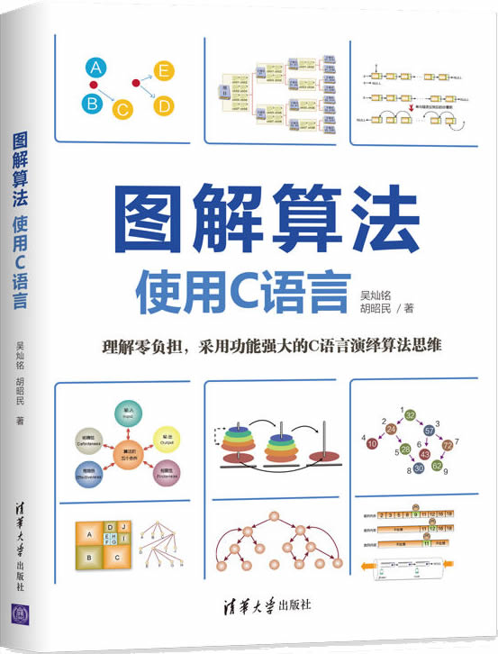

首页 > 书籍下载
《图解算法(使用C语言)》PDF下载（高清完整版）
|  | 作者：吴灿铭、胡昭民 |
| 出版时间：2020年01月01日 | |
| 出版社：清华大学出版社 | |
| 书号ISBN：9787302545422 | |
| 总页数：189 | |
| 总字数：32W |
这是一本专为初学者打造的算法入门书籍，用 C 语言作为实现各个算法的编程语言，内容简洁、清晰、严谨，还附带了大量的习题。
这里提供的是《图解算法(使用C语言)》的高清 PDF 下载，内容完整，附带目录标签。
自出版之日起，这本书受到了很多读者的好评，比如一位读者给出了这样的评价：
总体来说内容还可以，是我想要的，图文并茂，没有什么读着挠头的点，书中代码注释也比较详细。
还有一位读者这样说：很多人推荐这本书了，但是注意并不是所有人都适合看这本书，这本书更适合初学者和基础不好的的同学进行学习，书的质量还可以。
作为一名老程序员，强烈建议初学者先阅读《图解算法(使用C语言)》这样的书籍，先掌握一些常见的基础算法，实现算法入门，然后再阅读《算法导论》之类的书籍，去研究更高级的算法。书籍目录
- 第1章 进入算法的世界 1
- 1.1 生活中处处都存在算法 2
- 1.2 常见算法介绍 8
- 课后习题 21
- 第2章 常用数据结构 23
- 2.1 认识数据结构 23
- 2.2 数据结构的种类 26
- 2.3 树结构 32
- 2.4 图论简介 35
- 2.5 哈希表 37
- 课后习题 38
- 第3章 排序算法 40
- 3.1 认识排序 41
- 3.2 冒泡排序法 42
- 3.3 选择排序法 44
- 3.4 插入排序法 47
- 3.5 希尔排序法 49
- 3.6 合并排序法 52
- 3.7 快速排序法 53
- 3.8 基数排序法 56
- 课后习题 58
- 第4章 查找与哈希算法 60
- 4.1 常见查找算法的介绍 61
- 4.2 常见的哈希法简介 67
- 4.3 碰撞与溢出问题的处理 71
- 课后习题 74
- 第5章 数组与链表算法 76
- 5.1 矩阵 76
- 5.2 建立单向链表 81
- 课后习题 92
- 第6章 堆栈与队列算法 94
- 6.1 以数组来实现堆栈 94
- 6.2 以链表来实现堆栈 97
- 6.3 汉诺塔问题的求解算法 100
- 6.4 八皇后问题的求解算法 105
- 6.5 以数组来实现队列 108
- 6.6 以链表来实现队列 111
- 6.7 双向队列 115
- 6.8 优先队列 119
- 课后习题 120
- 第7章 树结构及其算法 121
- 7.1 以数组实现二叉树 122
- 7.2 以链表实现二叉树 125
- 7.3 二叉树遍历 128
- 7.4 二叉树节点的查找 132
- 7.5 二叉树节点的插入 134
- 7.6 二叉树节点的删除 136
- 7.7 堆积树排序法 139
- 课后习题 145
- 第8章 图结构及其算法 147
- 8.1 图的遍历 147
- 8.2 小生成树 155
- 8.3 图的短路径法 161
- 课后习题 172
- 附录
- 附录A 课后习题与解答 174
书籍下载
一键登录，免费下载完整版 PDF，文件名称：《图解算法(使用C语言)》.pdf